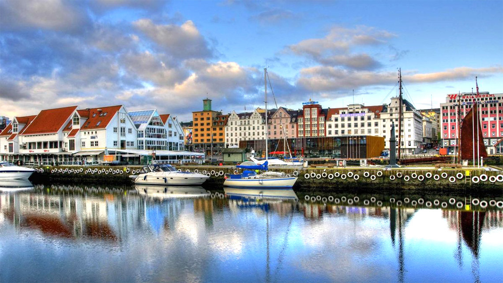
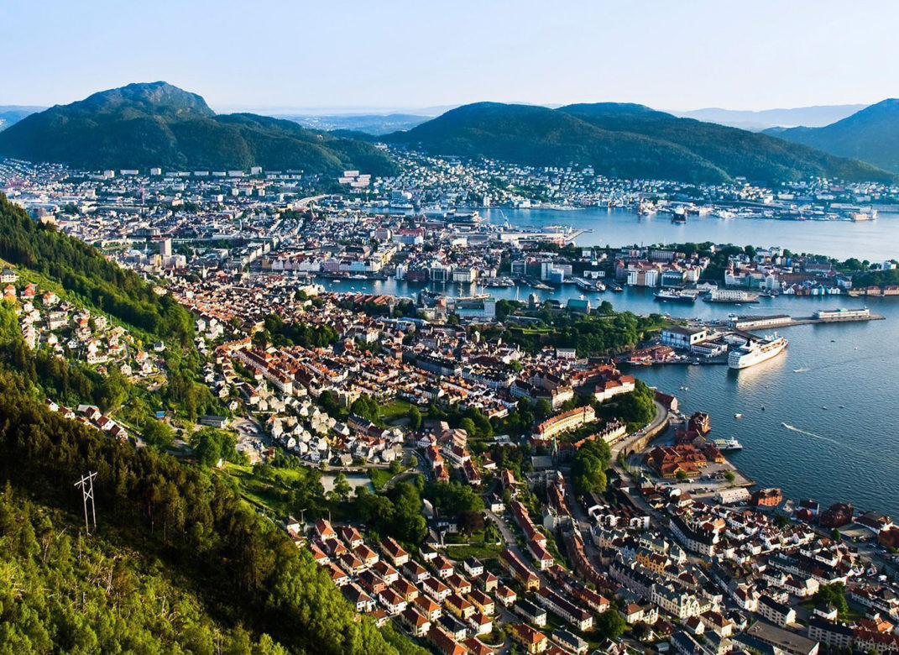
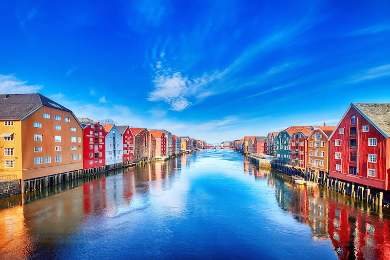
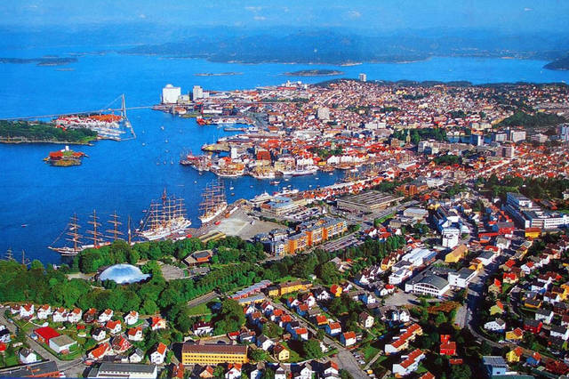
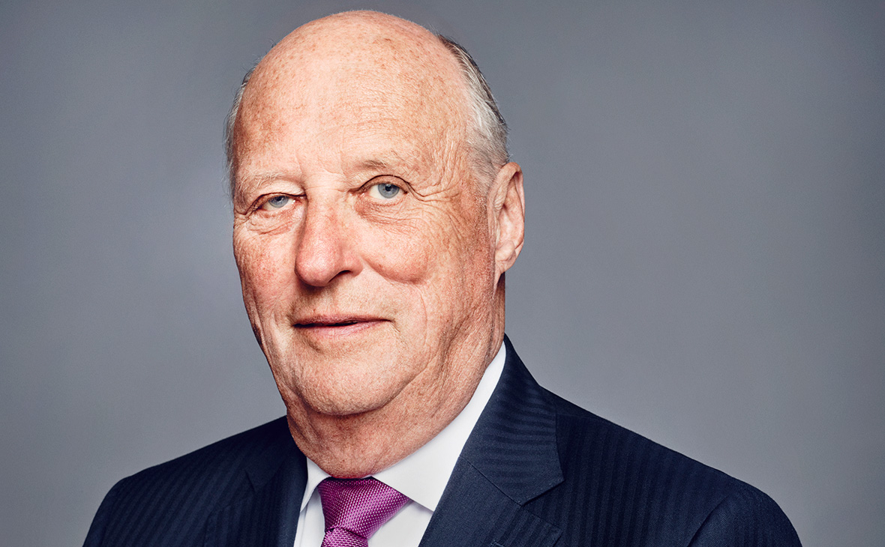
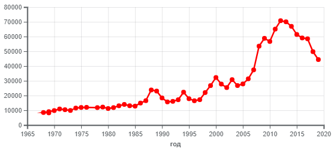

Норвегия - государство в Северной Европе , которое распологается в западной части Скандинавского полуострова и на огромном количестве прилегающих островов.
Крупнейшие города и столица Норвегии
Столицей Норвегии является город Осло
, а крупнейшие города Норвегии - Берген , Тронхейм Ставангер  Осло  Берген
 Тронхейм
 Ставангер
Площадь Норвегии и её население
Площадь Норвегии - 385 207 км².
Население - 5 425 270 человек.
Валюта
Валютой в Норвегии является Норвежская крона
Государственный строй Норвегии
Норвегия является конституционной монархией с парламентской демократией . Глава страны — король.
Религия Норвегии
Религией Норвегии является Лютера́нство. Лютера́нство - это одно из наиболее старых протестантских течений в христианстве. С лютеранством связано само возникновение понятия протестантизм, поскольку именно лютеран стали называть протестантами после их протеста в Шпайере. Возникло в результате реформационного движения в Германии в XVI веке, а затем и во время формирования государственных церквей скандинавских стран.
Король и Премьер-Министр Норвегии.
Королём Норвегии является Харальд V. А премьер-министр - Йонас Гар Стёре.  Харальд V Йонас Гар Стёре.
Миграция
На протяжении почти всей своей истории норвежское общество было этнически однородно. К 1980-м годам в Норвегии, для притормаживания негативных экономических последствий демографического старения населения, была принята либеральная иммиграционная политика.
 Иностранные граждане, иммигрирующие в Норвегию ежегодно, 1967-2019
Суд
Высшая судебная инстанция — Верховный суд Норвегии, основанный в 1815 , состоит из двадцати судей , суды апелляционной инстанции , суды первой инстанции — суды тингов, до 2002 года — уездные суды и городские суды, суд по делам импичмента — государственный суд.
Экономика Норвегии
Норвегия имеет развитую смешанную экономику со значительной долей государственного сектора в стратегических отраслях. Несмотря на чувствительность к глобальным экономическим циклам, экономика Норвегии продемонстрировала устойчивый рост с начала индустриальной эры. — крупнейший производитель нефти и газа в Северной Европе. Доля нефтегазового сектора в ВВП — 23 % в 2015 году. Геологоразведка нефти на шельфе страны началась лишь в 1962 году компанией Phillips Petroleum (США). Первое крупное месторождение открыто лишь в 1969 году. Первая промышленная добыча нефти началась в 1970 году, незадолго до нефтяного кризиса 1973 года. До этого экономика Норвегии основывалась на рыболовстве и фрахте судов.
Среди наиболее распространенных жанров традиционной вокальной музыки ярче всего выделяются баллады (норв. kvad) и короткие, часто импровизированные песни (стев). Также были распространены рабочие, колыбельные, эпические, религиозные песни, трэлинг-вокал и старые печатные балладные истории (норв. skillingsviser). Были распространены песенные поединки.